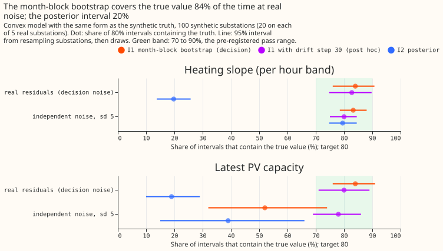
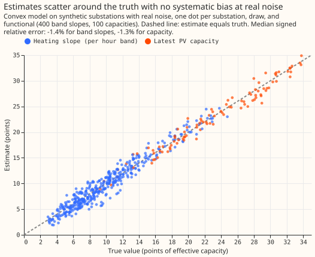
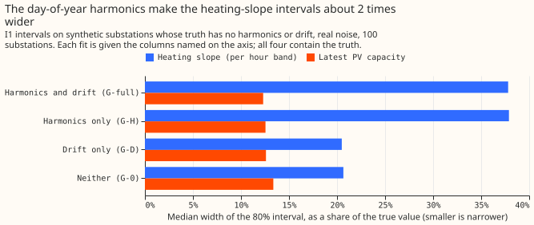
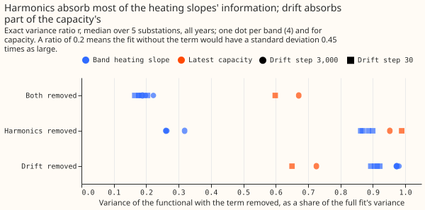
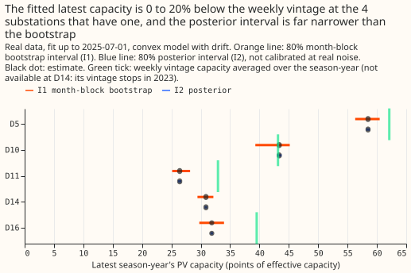

Differentiable physics, N5: does the convex model identify heating slopes and PV capacity at realistic noise?
At the noise the real fits have, the convex model's 80% month-block bootstrap intervals contain the true heating slope and the true PV capacity 84% of the time each, but a heating slope is only known to within about 38% of its size. N5 is the fifth step of the differentiable-physics series.
The pre-registered verdict is refuted, because the capacity interval covers the truth only 52%
of the time when the noise is independent. The shortfall is a bias of about 0.24 points of
capacity that comes mainly from the drift penalty at its tuned step of 3,000. The bias falls to 0.02
points at Part 4's step of 30, where coverage is 78% (a post hoc check). With independent noise, the
same intervals cover the noise-free fit's own value 85% of the time, so the bias, not the interval
width, accounts for the shortfall.
The test cannot show the bias that a wrong PV shape causes. The truth has the model's own form (experiment 112's gate test 1 found that bias). The posterior interval of the same fit covers only 20% at real noise and must not go on a card.
Absorption by the seasonal terms is a hypothesis for experiment 112's weak slopes, not a result. The day-of-year harmonics and the drift term can reproduce the seasonal cycles of temperature and of clear-sky PV. In N5 the harmonics absorb about 80% of a heating slope's variance. N5 does not test that hypothesis on experiment 112's pooled model, and N5's own capacity intervals are narrow.
We built 100 synthetic substations on the real calendar, weather, and PV shape of 5 Primary
substations (20 each), put a known heating slope per hour band and a known PV capacity into each,
added either real residuals borrowed from other substations (the decision noise, standard deviation
4.97 points, autocorrelation 0.83 at one half-hour) or independent noise (standard deviation 5.0, no
autocorrelation), and asked how often each 80% interval contains the truth. Both noise cells gate
the verdict. No forecast is scored. The first commit of this branch (ef25882da) is the
pre-registration, written before any fit.
Terms
- Points: percentage points of a substation's effective capacity. A heating slope is in points per 10 °C of cold.
- Month-block bootstrap: resample whole calendar months with replacement, refit the convex model, and take the 10th and 90th percentiles of the refitted values as an 80% interval. I1 keeps each calendar quarter's number of months in every resample and widens the interval about its median by sqrt(m / (m - 1)), where m is the months per quarter (6 for capacity). I1u resamples months freely. I2 is the posterior interval of the penalised fit.
- Arms (the convex model's variants): G-full has day-of-year harmonics and the monthly drift path (D1) beside the heating, capacity, and calendar terms. G-H has the harmonics and no drift. G-D has the drift and no harmonics. G-0 has neither. G-full-30 is G-full with experiment 106's ("Part 4") drift step of 30 in place of 3,000.
- Truths: T-HD keeps the real fit's harmonics and drift. T-0 sets both to zero.
- r: the variance of a quantity's estimate with the harmonics and drift removed, as a share of its variance in the full fit. A small r means the seasonal terms absorb most of the information.
- tau: the inflated bootstrap variance divided by the sandwich variance, the variance of a penalised fit under independent noise. A tau of 27 means the autocorrelated noise makes the estimate 27 times as uncertain as independent noise would.
- rho: a descriptive collinearity share of a quantity's column with the other columns.
- Effective sample size: the number of independent half-hours that carry the same information as the autocorrelated rows, which is the row count times rho over tau.
- Identified means the data fix a quantity within a narrow range. A calibrated interval contains the truth as often as its nominal 80%.
Figures
Figure 1 shows the month-block bootstrap (I1) covering the truth 84% of the time at real noise for both families, and the posterior interval (I2) 20%. With independent noise the posterior interval is fine for heating slopes (80%). The capacity row shows the bias: I1 covers the truth 52% of the time and the noise-free fit's value 85%. The step-30 row is a post hoc rerun at Part 4's drift step of 30, which covers 83% and 80% at real noise and 80% and 78% with independent noise.

Figure 2 shows the estimates scattering around the truth. The median signed relative error, the median of (estimate minus truth) divided by truth, is -1.4% for band slopes and -1.3% for capacity at real noise.

Figure 3 shows the seasonal terms widening the heating-slope intervals. Where the truth has no harmonics or drift, the fit that omits both has an I1 interval about 0.55 times as wide (relative width 0.21 against 0.38; real noise, band slopes). The harmonics alone account for the widening.

Figure 4 shows which term absorbs the information. At the drift step of 3,000, the harmonics carry the heating slopes (removing them leaves 26 to 32% of the variance) and the drift carries part of the capacity (removing it leaves 73%). At the step of 30 the drift absorbs more of the heating slopes (removing it leaves 89 to 92%, against 97 to 98%), and the harmonics' unique share falls (removing them leaves 86 to 90%).

Figure 5 shows the real fits at the 2025-07-01 cut. The fitted latest capacity is 5.8%, 19.8%, and 19.4% below the season-year mean of experiment 45's weekly capacity vintage at D5, D11, and D16, and 0.5% above it at D10; D14's vintage stops in 2023. At the replicate cut (2024-07-01) D16 is 24.7% below the vintage, outside experiment 40's 20% band.

Design and numbers
- Design: convex model of
studies.dp_gamwith fitted capacity and D1 drift (ridge 0.1, drift step 3,000), one design per substation, cut 2024-07-01, all years, lockdown out (experiment 103's rows). Every fit is a column subset of that design. Each of D5, D10, D11, D14, and D16 gets 20 draws. - Truths and noise: truth heating totals are U(0.7, 1.3) times the real fit's (floor 2 points per 10 °C); capacity is U(5, 25) points then U(1, 5) increments. Real noise is whole months of other decision substations' residuals, from other years, with a random sign; 4.7% of slots were empty and set to zero, and one draw can reuse a donor month for several of its months.
- Decision rule, per family: I1's coverage of the truth in the real-noise cell and the
independent-noise cell. Band slopes are
calibrated(84% with a site-clustered 95% interval of 76.0 to 90.8%, and 83%, 78.5 to 88.0%). Capacity isoverconfident(84%, 76 to 91%, and 52%, 32 to 74%). The verdict isrefuted. The independent-noise cell is a gate cell with the same standard deviation as the real noise but no autocorrelation. - Width, real-noise cell: band slopes 3.3 points per 10 °C, 38% of the truth, so
weak; capacity 2.8 points, 12% of the truth, soprecise. With independent noise the widths are 8% and 3%. - Posterior interval (I2) at real noise: 20% (bands) and 19% (capacity). The inflated bootstrap variance is 27 (bands) and 25 (capacity) times the sandwich variance (tau). The effective sample size is rho over tau of the rows, with rho 0.06 for bands and 0.17 for capacity, which is 0.23% (bands) and 0.70% (capacity). I1 is 5.0 and 4.5 times as wide as I2 in the simulation. On the real data I1 is 4.6 times as wide (2.5 to 6.0) for slopes and 6.4 times as wide (2.8 to 31) for capacity.
- Penalty bias on capacity (analytic, full fit): median -0.24 points (median absolute 0.35; the sign varies by site, 40% of draws positive) at drift step 3,000, of which -0.23 comes from the drift penalty and -0.01 from the ridge. At step 30 it is -0.02 points. The bias is 0.51 of the interval width with independent noise and 0.13 at real noise. For band slopes the median absolute bias is 0.07 points at step 3,000 and 0.004 at step 30.
- Seasonal misfit in the donor residuals: fitting the full model to the real noise alone, unbounded, returns -0.4 to -1.5% of the true slope and -1.0% of the true capacity on average. The bounded fit's 5 to 6% measures the zero bound (every fit sits on a bound), not misfit.
- Absorption (G-0 against G-full): r is 0.18 to 0.22 for band slopes and 0.67 for capacity at
drift step 3,000, and 0.16 to 0.20 and 0.60 at step 30. The capacity ratio is above the 0.56
limit, so the label is
absorption partialat both penalties, though the heating slopes alone would beabsorption large. The I2 width ratios (0.44 and 0.83 at real noise) equal the square roots of r (0.44 and 0.82) by construction. The I1 width ratios agree with them with independent noise (0.43 and 0.82) and at real noise for band slopes (0.53, 0.09 above, inside the 0.1 tolerance) but not for capacity (1.08 against 0.82). - Noise: autocorrelation 0.83, 0.44, and 0.21 at lags of 1, 48, and 336 half-hours; standard deviation 4.97 points.
Other arms (I1 coverage of the truth, real noise):
| Arm | Truth | Band slopes | Capacity | Note |
|---|---|---|---|---|
| G-full-30 | T-HD | 83% | 80% | post hoc gate cell |
| G-full, capacity pinned to the truth | T-HD | 84% | not scored | |
| G-full, capacity pinned to 0.8 times the truth | T-HD | 83% | not scored | median slope error moves 1.2 percentage points |
| G-full, no bounds | T-HD | 84% | 79% | 95% of bounded fits have an active heating bound |
| G-0 | T-HD | 27% | 0% | slopes overstated by 66%, capacity by 35% |
| G-full, 2-year window | T-HD | 85% | 81% | 1.2 times as wide for slopes, 0.93 times for capacity |
| G-full | T-0 | 85% | 83% | |
| G-0 | T-0 | 73% | 71% | |
| G-H | T-0 | 84% | 75% | band intervals as wide as G-full's |
| G-D | T-0 | 75% | 80% |
Predictions against outcome
- Held: I1 coverage 70 to 90% in the decision cell for both families; band slopes
weak; capacity width under 25%; I2 under 60% at real noise; tau between 3 and 30; I1 and I2 both 70 to 90% for band slopes with independent noise; r at most 0.36 for every band slope; the I1 width ratio within 0.1 of the square root of r for band slopes; G-0 on T-HD under 50%; the pinned-0.8 arm within 10%; an active bound in over 30% of fits; unbounded coverage within 5 points (exactly 5 for capacity); spectral share over 70% in G-full; I1 2 to 5 times I2 in the simulation; the night-band slope excluding zero at all 5 real substations; the penalty bias under a quarter of the width at real noise (0.13); the noise-only bias under 5% (unbounded). - Failed: I1 and I2 both 70 to 90% for capacity with independent noise (52% and 39%); r at most 0.56 for capacity (0.67); harmonics giving the smaller r for capacity (the drift does, 0.73 against 0.95); drift giving the smaller r for the night band (the harmonics do, 0.26 against 0.97); independent-noise widths at 30 to 60% of the real-noise widths (23% and 25%); G-0's spectral share under 50% (70 to 83%); 2-year widths 1.3 to 2 times the all-years widths (1.2 and 0.93); the I1 width ratio within 0.1 of the square root of r for capacity at real noise; I1 2 to 5 times I2 on the real capacity (6.4 times).
- Not pre-registered: with independent noise the penalty bias is 0.51 of the interval width.
- Real data (2025-07-01 cut): I1 capacity intervals are 2.7 to 5.9 points wide. They overlap the vintage's 20% band at the 4 substations with a vintage.
Substation cards for the five decision substations
Provisional: fitted to past weather (ECMWF Reanalysis v5 temperature and Copernicus Atmosphere Monitoring Service irradiance), fit up to 2025-07-01, 80% month-block bootstrap (I1), heating in points per 10 °C. Heating slopes carry the label "80% month-block bootstrap; calibrated for noise on in-family synthetic data (N5); excludes PV-shape bias; weak". The capacity family failed its gate, so it gets no convex interval on a card, and Part 5's (experiment 110) capacity rule may not use these intervals; the second table lists them only as reference. Pooled or variable-projection numbers carry "weakly identified at real noise levels (experiment 112)"; none are printed here, because this experiment did not read experiment 105's or experiment 112's pooled fits.
| Substation | Night | Morning | Midday | Evening |
|---|---|---|---|---|
| D5 | 7.9 to 10.5 | 9.7 to 13.3 | 9.6 to 13.0 | 8.3 to 10.9 |
| D10 | 15.5 to 19.8 | 17.8 to 22.5 | 18.8 to 23.7 | 16.1 to 20.2 |
| D11 | 6.9 to 9.7 | 9.2 to 12.1 | 8.9 to 12.2 | 6.7 to 10.0 |
| D14 | 5.2 to 7.0 | 7.8 to 9.2 | 9.3 to 10.7 | 7.0 to 9.0 |
| D16 | 4.3 to 6.6 | 5.5 to 8.0 | 6.1 to 8.9 | 3.4 to 5.8 |
Not calibrated per the pre-registered gate, so not for a card: the latest season-year's capacity, I1 80% interval against the weekly vintage's season-year mean (points).
| Substation | Fitted capacity | I1 interval | Vintage mean |
|---|---|---|---|
| D5 | 58.5 | 56.3 to 60.5 | 62.1 |
| D10 | 43.4 | 39.3 to 45.2 | 43.2 |
| D11 | 26.4 | 25.1 to 28.2 | 32.9 |
| D14 | 30.9 | 29.4 to 32.2 | not available (vintage stops in 2023) |
| D16 | 31.9 | 29.8 to 34.0 | 39.5 |
Checks
- Median forecast minus mean forecast, and the mean-forecast error beside the quantile score: not applicable; no forecast is made. The estimates' own bias is the median signed relative error, -1.4% (bands) and -1.3% (capacity).
- Audit triggers that fired: the trigger for a result that contradicts a prediction or an
earlier finding fired, because the convex model's capacity is
preciseat real noise where experiment 112's pooled fit failed, several predictions failed without a tested explanation, and the fitted capacity is more than 20% below the vintage at the replicate cut's D16 (24.7%); the explanation recorded here is the seasonal terms and the in-family truth. The trigger for a later experiment's design depending on the result fired, because the cards, Part 5's capacity reading, and the next pooled test depend on it. - Audit triggers that did not fire: a failed control (all five controls pass: the largest
relative difference from
fit_gamis 4.6e-11, and from a dense bounded least-squares fit 4.9e-10; noise-free recovery is exact to 1.6e-12 over 235 checks; I2 covers 79.5% of the noise-free value over 500 independent-noise draws; I1's coverage on the cell's 100 draws is 78% and 81%; every resample keeps every quarter's size; no row is past its cut); a quantile-score contrast and a mean-forecast contrast pointing in different directions (coverage and bias point the same way: the capacity bias lowers coverage); a leave-one-site-out result that changes a label (leaving any one site out leaves the labels unchanged, the capacity row staysoverconfidentand the band rowcalibrated, absorption stayspartial, and leaving D16 out moves the capacity independent-noise interval to 28 to 60%, wholly below 70%); a nested arm beating the arm that contains it (G-full never beats the true smaller G-0 on T-0 in error, and the pinned-truth arm's slope error, 14.65% root mean square, matches G-full's, 14.62%). The trigger for a headline interval more than twice or less than half as wide as a sister experiment's cannot be checked, because Part 5 has not run.
Caveats and what to try next
- Caveats: ECMWF Reanalysis v5 and Copernicus Atmosphere Monitoring Service estimates flatter the solar term by an amount this experiment did not measure. In-family truths cannot show PV-shape bias. The donors are the other decision substations. The inflation is an approximation (uninflated I1 covers 83% and 80%). The noise is not experiment 112's (whole months of the same season from another year, not weeks from any season). Capacity rests on 11 months of data, not the 6 the plan assumed, so the inflation with m = 6 is slightly too large. Season-years with under 1,000 training rows get no capacity column (see the data-processing page). The 2024-07-01 replicate cut is reported only for the capacity-against-vintage comparison, not for the intervals.
- Next: a gate of the step-30 convex model in both noise cells would be needed before a capacity
interval is printed, and Part 5's capacity rule depends on that outcome. A test of the pooled
model with the same real-residual noise would show whether pooled slopes are as weak. Part 5's
bootstrap ranges and
dp_pinned_capacitycan go beside the real intervals once Part 5 has run.
Reproduce
uv run python ml-experiments/00113-*/e00113_grid.py reals
uv run python ml-experiments/00113-*/e00113_grid.py control
uv run python ml-experiments/00113-*/e00113_controls.py static
uv run python ml-experiments/00113-*/e00113_controls.py noisy
uv run python ml-experiments/00113-*/e00113_grid.py main
uv run python ml-experiments/00113-*/e00113_grid.py extra
uv run python ml-experiments/00113-*/e00113_analytic.py
uv run python ml-experiments/00113-*/e00113_real.py
uv run python ml-experiments/00113-*/e00113_summary.py
uv run python ml-experiments/00113-*/e00113_report.py
uv run python ml-experiments/00113-*/e00113_charts.py
Every number above is printed in report.txt next to this page.